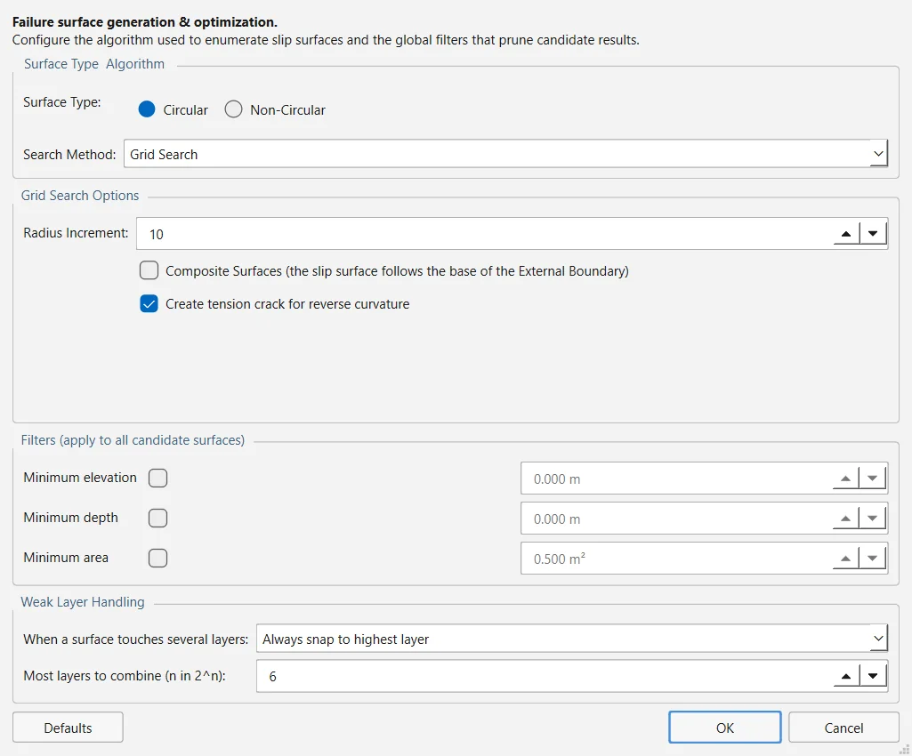

The critical factor of safety is the lowest one among the surfaces the program tries, so the way those surfaces are generated decides the answer as much as the method of slices does. This page explains how to choose and configure the seven searches, how to aim them with grids, Block Search objects, focus objects and Slope Limits, how to add surfaces by hand, and how to filter and optimise the candidates. The algorithms themselves are described in Section 3.4.
2.7.1Surface Options#
Every search setting is in Surfaces → Surface Options…. The top of the dialog holds the Surface Type (Circular or Non-Circular) and the Search Method; the list of methods follows the surface type, as Table 2.7.1 shows. Below them are the options of the chosen search, the filters that apply to every candidate surface and the weak-layer options. A new project starts with Circular surfaces and Grid Search.
Defaults restores the options of the search on screen only; the other searches keep their values. OK writes every panel back to the project, including those of searches you did not select, so switching between searches never loses what was typed.
| Search Method | Surface Type | How the candidate surfaces are generated | Size of the population |
|---|---|---|---|
| Grid Search | Circular | A rectangular grid of centres; at each centre a fan of radii between the nearest point of the slope surface and the nearer Slope Limit. | (nx + 1)(ny + 1)(Radius Increment + 1) circles |
| Slope Search | Circular | Two random points on the ground, one on the toe side and one on the crest side, and a random inclination at the toe define each circle; the eight best are then refined by a short random walk. | Number of Surfaces |
| Auto Refine Search | Both | The slope is divided into divisions and circles are fitted through the mid-points of every pair of them; the divisions with the lowest factors are kept and the process repeats on them. Under Non-Circular each circle is converted into a polyline. | Divisions, circles per division and iterations |
| Block Search | Non-Circular | Vertices taken from the Block Search objects you draw, joined in order of x and projected up to the ground at the projection angles. | Number of Surfaces |
| Path Search | Non-Circular | A path that starts at a random point near the toe and grows segment by segment towards the crest, always turning upwards, until it re-emerges at the ground. | Number of Surfaces (valid ones) |
| Simulated Annealing | Non-Circular | One surface whose vertices are moved by very fast simulated annealing and then refined locally, after Su (2009) and Greco (1996). | Generation steps and stopping criterion |
| Particle Swarm Search | Both | A swarm of circles that moves towards the lowest factors of safety (Kennedy & Eberhart, 1995); it can report one minimum or several. Non-circular surfaces come from the optimisation of the circles it finds. | Particles × iterations |

The search settings are saved with the model in the .ogr file, and every search is built from them by the routine that the command line and the MCP server also use, so a model generates the same surfaces however it is run. The random searches (Slope, Block, Path, Simulated Annealing and Particle Swarm) take their seed from Analysis → Project Settings → Random Numbers: pseudo-random with seed 10116 by default, so two runs of one model give the same answer.
2.7.2Options of each search#
The tables give each option as it is labelled in the dialog, what it does and its default; the range accepted by the dialog is given where it matters. Three options appear on several panels but are one setting each, so ticking them on one panel ticks them on all:
- Composite Surfaces (Grid, Slope and Auto Refine): where a circle would pass below the bottom of the External Boundary, the slip surface follows that bottom instead. Off by default.
- Create tension crack for reverse curvature (Grid and Slope): inserts a tension crack automatically where the surface has a concave stretch on its up-slope side. On by default.
- Optimize Surfaces (the non-circular searches and the swarm): runs the optimisation described in Section 2.7.10 on the result. Unless you change it, it is on for Simulated Annealing, Particle Swarm and the non-circular Auto Refine, and off for Block and Path Search.
Grid Search#
| Option | What it does | Default |
|---|---|---|
| Radius Increment | Number of intervals between the smallest and the largest radius tried at each centre, so each centre gets Radius Increment + 1 circles (1 to 1000). | 10 |
| Composite Surfaces | See above. | off |
| Create tension crack for reverse curvature | See above. | on |
Slope Search#
| Option | What it does | Default |
|---|---|---|
| Number of Surfaces | Circles generated at random (10 to 1 000 000). The eight best are then refined by a random walk of 120 steps each. | 5000 |
| Upper Angle, Lower Angle | Limits of the Initial Angle at Toe, the inclination of the circle where it leaves the ground at the toe; each applies only when its box is ticked. Unticked, the angles are drawn from −70° up to β − 5° (at least 5°), where β is the inclination of the slope face. | off (−45°) |
| Composite Surfaces | See above. | off |
| Create tension crack for reverse curvature | See above. | on |
The window of toe angles is always widened down to −70°, so a ticked Lower Angle above −70° has no effect in version 0.1.235. And the Slope Search takes its entry and exit ranges from the ground profile, not from the Slope Limits: limits you set filter its surfaces, as they do for every search, but do not steer where it looks. The analysis notes say so when it happens.
Auto Refine Search#
| Option | What it does | Default |
|---|---|---|
| Divisions along slope | Number of divisions of the slope surface between the Slope Limits, measured along the ground (2 to 200). | 10 |
| Circles per division | Circles fitted through the mid-points of each pair of divisions, with their tangent swept from the line joining the two points to the vertical (1 to 200). | 10 |
| Number of Iterations | Refinement cycles; all of them run (1 to 50). | 10 |
| Divisions to use in next iteration | Share of divisions kept for the next cycle, those with the lowest factor of safety among the circles that end in them. The dialog accepts 1 to 100 %; the search uses at least 10 % and at most 95 %. | 50 % |
| Number of vertices along surface | Non-Circular only: each circle becomes a polyline with this many vertices, and the factor of safety is computed on the polyline (3 to 100). Every vertex is a compulsory slice boundary, so keep it below the number of slices. | 12 |
| Optimize Surfaces | Non-Circular only. See above. | on |
| Composite Surfaces | See above. | off |
Block Search#
| Option | What it does | Default |
|---|---|---|
| Number of Surfaces | Trial surfaces generated (10 to 1 000 000). | 5000 |
| Multiple Groups | Searches the objects of each Group ID on their own, with Number of Surfaces divided equally between the groups. | off |
| Implicit Region Bands | Used only when no Block Search object is drawn: the program then samples a box over the slope face divided into this many vertical bands, one vertex per band (1 to 20). With objects drawn it does nothing. | 3 |
| Left Projection Angle: Start Angle, End Angle | Direction in which the surface rises from its leftmost vertex to the ground, counter-clockwise from the +x axis. Different start and end angles give a random angle between them for each surface (0 to 360°). | 135°, 135° |
| Right Projection Angle: Start Angle, End Angle | The same for the rightmost vertex. | 45°, 45° |
| Convex Surfaces Only | Rejects surfaces with a reflex (non-convex) vertex. | off |
| Optimize Surfaces | See above. | off |
Path Search#
| Option | What it does | Default |
|---|---|---|
| Number of Surfaces | Number of valid surfaces to generate; invalid ones are discarded and not counted. Generation stops in any case after 20 times that many attempts. | 5000 |
| Upper Angle (Initial Angle at Toe), Lower Angle (Initial Angle at Toe) | Limits of the inclination of the first segment, as absolute angles counter-clockwise from the +x axis; each applies only when ticked. Unticked, the window runs from 45° below the horizontal to β − 5°, β being the inclination of the ground at the starting point. | off (45°) |
| Segment Length: Manual | Length of every segment. Unticked, it is automatic, about 0.3 H, where H is the height of the slope between the Slope Limits; the value shown means nothing until the box is ticked. | off |
| Convex Surfaces Only | Rejects surfaces with a reflex vertex. | off |
| Optimize Surfaces | See above. | off |
Simulated Annealing#
| Option | What it does | Default |
|---|---|---|
| Initial number of surface vertices | Vertices of the starting surface. The dialog accepts 3 to 100; the search uses at least 4. | 8 |
| Number of annealing generation steps | Steps of the annealing stage (10 to 1 000 000). | 1000 |
| Number of factors of safety compared before stopping | The search stops when the best factor of safety has not improved by more than the tolerance in this many consecutive runs (2 to 50). | 5 |
| Tolerance for stopping criterion | Tolerance of that criterion. | 0.0001 |
| Coefficient in temperature reduction | The coefficient of the cooling schedule of Su (2009). The dialog accepts 0.5 to 50; the search clamps it to 1–10. | 8.0 |
| Convex Surfaces Only | Rejects surfaces whose curvature changes sign. | off |
| Optimize Surfaces | See above. | on |
Particle Swarm Search#
| Option | What it does | Default |
|---|---|---|
| Number of particles | Size of the swarm (3 to 2000). | 50 |
| Number of iterations | Moves of the swarm (1 to 10 000). | 50 |
| Number of Mins: Report several minima | Reports the most critical surface of each region the swarm tells apart, instead of the single global minimum. | off |
| Grouping radius | Two minima closer than this, as a percentage of the span of the search space, are the same minimum. Active only with several minima. | 10 % |
| Optimize Surfaces | See above. | on |
Two settings outside this panel also act on the swarm. Analysis → Project Settings → Advanced → Use enhanced particle swarm algorithm (on by default) scatters again, at the end of each iteration, the fifth of the particles that sit on the highest factors of safety. And the swarm honours the Slope Search's Upper Angle and Lower Angle when those boxes are ticked; otherwise it searches toe angles between −85° and +85°.
2.7.3Grids of slip centres#
The Grid Search needs a rectangle of centres above the slope. Surfaces → Auto Grid makes its extent automatic: horizontally from 20 % inside each end of the model, vertically from the top of the model up to 80 % of the model's height above it. Auto Grid changes only the extent; the number of intervals stays as it was.
Surfaces → Add Grid… opens a small window that stays open while you work on the model. Enter X min, X max, Y min and Y max, or press Pick rectangle on canvas (2 clicks) and click two opposite corners; the boxes update and OK applies them. Reset to Auto fills in the automatic extent and 20 × 20. Both commands are greyed out unless the search method is Grid Search.
The group of the Add Grid dialog is labelled Number of centres, but nx and ny are counted as intervals: the grid has centres, as the status bar states when you press OK. The default 12 × 12 is therefore 13 × 13 = 169 centres, and with the default Radius Increment of 10 the search analyses up to 169 × 11 = 1859 circles.
At each centre the program measures the distance to the nearest point of the slope surface (the ground between the Slope Limits) and the distance to the nearer of the two limit points. The radii are spread evenly between the two, inset by 5 % of the difference at each end, so every circle cuts the slope (Figure 2.7.2). The population of a grid is exactly
where
- intervals of the grid in x and y (nx and ny in Add Grid)
- Radius Increment
A minimum found on the edge of the grid is the best of what was searched, not necessarily the lowest factor of safety: the true minimum may lie outside. When the critical centre lies on the edge, the analysis notes say so and give the grid extent; widen the grid on that side and compute again.
2.7.4Block Search objects#
A Block Search builds each trial surface from objects you draw on the model. Select Block Search in Surface Options first: the four commands of the Surfaces menu are greyed out with any other search method.
| Command | How to draw it | What every trial surface takes from it |
|---|---|---|
| Surfaces → Add Block Search Window | Click the corners; right-click or Enter closes it. | One vertex at a random point inside it. |
| Surfaces → Add Block Search Line | Click its two end points. | One vertex at a random point along it; the surface does not follow the line. |
| Surfaces → Add Block Search Point | Click the point. | The point itself: every surface passes through it. |
| Surfaces → Add Block Search Polyline | Click its vertices from one end to the other; right-click or Enter finishes it. | Two points generated on it and every vertex between them: the surface follows the polyline between its two points, which is how a surface runs along a weak layer. |
The vertices from all the objects are sorted by x and joined; the two end vertices are then projected up to the ground at the Left and Right Projection Angle (Figure 2.7.3). A surface that does not reach the ground within the Slope Limits is discarded.
When a polyline is drawn, the Block Search Object window opens. It shows the kind of object and, for a polyline, where each of its two points is generated: Left point — Any Line Segment (the default), Left Line Segment or Left End Point; Right point — Any Line Segment, Right Line Segment or Right End Point. Right-click an object and choose Block Search Object… to open the window again later.
With Multiple Groups ticked in Surface Options, the same window opens for every object you draw, and its Group ID (0 to 999) becomes editable: objects with the same Group ID are searched together, each group on its own, and Number of Surfaces is divided equally between the groups. The critical surface is the lowest of all of them. A typical use is one polyline per weak layer, each with its own Group ID.
The analysis refuses objects it cannot use, with the reason: a polyline that does not advance in x, another object inside the horizontal extent of a polyline, or a Line Segment option on a polyline of a single segment. With no object drawn the search still runs, over a region chosen by the program (the Implicit Region Bands option), and the analysis notes say that the region was not chosen by the model.
2.7.5Surfaces defined by hand#
With Surface Type set to Circular you can add circles of your own; they are analysed in addition to the search and compete with it for the global minimum.
- Surfaces → Add Surface (centre and radius)… asks for the centre as
x,yand then the radius (20 by default). - Surfaces → Add Surface (three points) enters a drawing mode: click three points of the circle on the model. Three points too close to a straight line are refused with a message.
- Surfaces → Manage Surfaces… lists the circles by centre and radius; choose one to delete it, or (delete all). To change a circle, delete it and add it again.
The three commands are greyed out under Non-Circular, because one analysis carries one surface type.
2.7.6Focus objects#
A focus object narrows the search to the surfaces that interact with it. The four commands are in Surfaces → Focus Search; each asks for its points as text, x,y x,y …, which places them exactly.
| Command | Points | A surface is kept when it… |
|---|---|---|
| Add Focus Window… | 4 | passes through the quadrilateral. |
| Add Focus Line… | 2 | crosses the segment. |
| Add Focus Point… | 1 | passes within the capture tolerance of the point (asked for after the point; 0.5 by default). |
| Add Focus Tangent… | 2 | is tangent to the segment within the capture tolerance (0.5 by default). |
Surfaces → Focus Search → Manage Focus Objects… lists them; choose one to enable or disable it, or to delete it, or choose (delete all). A disabled object is kept in the model but filters nothing.
Focus objects filter the candidate surfaces, and they do it before the factor of safety is computed, which is what makes them cheap. Every search honours them. The surfaces they remove are counted apart from the valid and invalid ones, as rejected by the focus object, so a focused run and an unfocused one keep comparable populations. Simulated Annealing and the Particle Swarm move from one surface to the next, so a narrow focus also narrows the path they walk and can leave them with no surface at all even where surfaces satisfying it exist; the analysis notes warn about this, and a Grid, Path or Block Search reaches a tightly focused region more reliably.
Source: ogr_slip2d/focus.py2.7.7Slope Limits and the moment axis#
The Slope Limits are the stretch of ground within which a slip surface may daylight. They filter every surface, whatever the search, and they also define the ground used to generate surfaces by the searches that build them from the profile — the radii of the Grid Search, the divisions of Auto Refine, the starting points of the Path Search. By default they are automatic: the whole ground surface.
Surfaces → Slope Limits → Define Limits… and Move Slope Limits… open the same Define Slope Limits dialog, with the positions as x coordinates:
- First set of limits — Left limit (x) and Right limit (x). On a model still on automatic limits the boxes start at its horizontal extent.
- Second set of limits — tick it to add a second window, for example one near the toe and one near the crest. It must lie entirely to the right of the first.
- Reset returns to automatic, as does Surfaces → Slope Limits → Reset Slope Limits, which clears both sets.
A circle has a natural centre for moment equilibrium; a polyline does not. By default each non-circular surface takes moments about an axis built from its own entry–exit chord. Surfaces → Slope Limits → Define Moment Axis… asks for Axis x and Axis y and applies that single point to every non-circular surface; Reset Moment Axis returns to one axis per surface. The axis matters only to the methods that take moments (Section 3.1).
2.7.8Surface filters#
The Filters group of Surface Options applies to every candidate surface of every search; each filter acts only when its box is ticked.
| Filter | What it does | When unticked |
|---|---|---|
| Minimum elevation | Discards surfaces whose lowest point lies below this elevation (m). | no limit |
| Minimum depth | Discards surfaces whose greatest vertical depth below the ground — the height of the tallest slice — does not exceed this value (m). It removes shallow skins. | no limit |
| Minimum area | Discards surfaces whose sliding mass, taken as the sum of the slice areas, is smaller than this (m²). | a default of the search: 0.5 m² for Auto Refine, 2.0 m² for Block Search, 1.0 m² for the other five |
A Minimum area of zero cannot be set: a ticked value of 0 is treated as unticked, and the default of the search applies. The 0.5 m² the dialog shows while the box is unticked is only a starting value; the search uses its own default from the table.
2.7.9Weak layers#
A weak layer is a polyline with a strength of its own, drawn with Boundaries → Add Weak Layer (Ctrl+7; see Section 2.2). A trial surface that reaches it is clipped to run along it instead of crossing it. The Weak Layer Handling group of Surface Options decides what happens when a surface touches several layers:
- Always snap to highest layer (default) — every layer the surface touches clips it, and where they overlap the highest one wins. One analysis per surface.
- Automatic case generation — every combination of the touched layers being on or off is analysed, the case with all of them off included, and the worst is kept: 2n analyses of a surface that touches n layers.
- Most layers to combine (n in 2^n) — default 6. A surface that touches more layers than this falls back to the highest layer, and the run says so.
A layer that ends abruptly can leave a clipped surface with a near-vertical step. Analysis → Project Settings → Advanced → Maximum base angle on weak-layer clips (80° by default) discards clipped surfaces whose steepest slice base exceeds it; it applies only to surfaces a weak layer has clipped, and a value of 90° removes the ceiling altogether.
2.7.10Optimising non-circular surfaces#
The optimisation refines a non-circular surface by a random walk of its vertices (Greco, 1996): it moves one vertex, recomputes the factor of safety, keeps the change if the factor falls, and stops when the surface no longer moves. It runs in two ways.
- As part of a search, with the Optimize Surfaces box of Surface Options. Its Settings… button opens the panel of Table 2.7.12.
- On demand, with Surfaces → Optimize Surfaces… after a Compute. It starts from the critical surface of the method you choose (it asks when several were computed), asks for the Maximum evaluations (the Maximum Iterations of the panel, 4000 by default) and, if it finds a lower factor, replaces that method's critical surface in the Results dock and the model view, and in the Interpret windows opened afterwards. A circular critical surface is refused: run a Block or Path Search first.
| Option | What it does | Default |
|---|---|---|
| Surfaces to Optimize | Global Minimum, All (every surface the search generated, which takes far longer) or Factor of Safety Less Than a threshold. | Global Minimum (threshold 1.5) |
| Tolerance (factor of safety) | Converged when the factor of safety differs from the average of the last five passes by less than this. | 1 × 10⁻⁹ |
| Maximum Iterations | Upper limit on the evaluations of the walk. | 4000 |
| Step reduction factor (0 to 1) | How far the vertices move on each pass relative to the previous one. | 0.5 |
| Maximum Concave Angle | Largest concave angle allowed between adjacent segments. Unticked means that no concave angle is allowed, not that there is no limit. | on, 5° |
| Explore all vertices before moving surface | Finds a direction of movement for every vertex first and then moves them all at once, instead of one vertex at a time. | off |
| Snap Shallow Surfaces to Slope | After the walk, lifts onto the ground the vertices that lie less than a minimum depth below it — which removes very shallow ends — and recomputes the factor of safety. With Specify Distance unticked, that depth is 0.1 % of the model's relief. | on; distance off |
| Use checks for depth, elevation, concave surface | Applies the Minimum depth and Minimum elevation filters and the concave-angle limit to the optimised surfaces too. | on |
The Optimize Surfaces Settings panel writes its values to the project when you press its own OK; cancelling Surface Options afterwards does not undo them.
2.7.11Checking that the search has found the minimum#
- Read Analysis → Analysis Notes… after every run: a critical centre on the edge of the grid, a focus that emptied a guided search or a setting the chosen search cannot honour are reported there (Section 2.8).
- Run a second, different search on the same model — a Slope or Particle Swarm Search against a Grid Search, a Path Search against a Block Search — and compare the critical surfaces.
- In the Interpret window, Data → Graph SF Along Slope… shows where along the ground the low factors of safety daylight, and Data → Summary of Invalid Surfaces… shows how many surfaces were rejected and why. Use them to move the grid, the Slope Limits or the focus objects towards the critical region.